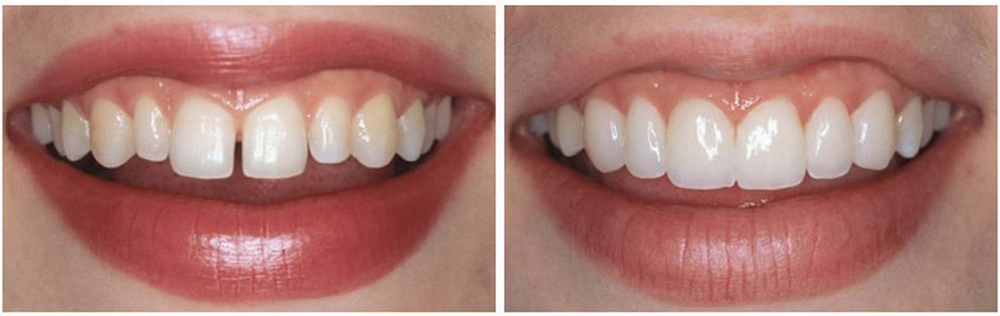
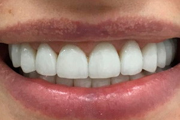
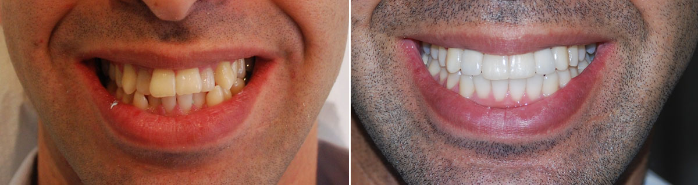

SwissDent: nouveau sourire, nouvelle vie
Notre sourire est notre carte de visite dans le monde, il nous permet d'interagir avec les autres. Qu'il s'agisse d'une démonstration de sympathie, d'une conversation ou d'un moment de rire, nos dents et nos lèvres montrent qui nous sommes. Une bouche fermée et sans expression ne nous permet pas de briller.
Prendre soin de la santé et de l'esthétique de nos dents est très important. Cependant, certaines personnes souffrent de problèmes dentaires qui les empêchent de sourire librement et de s'exprimer.
C'est le cas d'Elise, une jeune femme Française qui cachait son sourire et ne profitait pas de la vie.
Un sourire discret et des sentiments cachés
Dès son plus jeune âge, Elise a eu des problèmes avec ses dents. Certains médecins lui ont assuré que c'était dû à l'utilisation prolongée de tétines et de biberons pendant l'enfance. Malgré cela, personne n'a pu lui prescrire un traitement susceptible de l'aider.
Les premières années, elle n'a pas eu trop de difficultés, mais au fil du temps, elle a commencé à se sentir mal à l'aise.
Le premier jour d'école a été particulièrement difficile pour elle. Beaucoup de ses camarades de classe se sont moqués de ses dents, ce qui l'a poussée à les cacher. Elle ne pouvait pas sourire comme le reste de ses camarades.
Elle demandait constamment à ses parents de trouver un moyen de l'aider à avoir un beau sourire comme les autres filles. Après des centaines de visites chez des spécialistes, elle est devenue de plus en plus frustrée.
Le traitement était trop cher et la famille ne pouvait pas se le permettre.
Horreur et douleur, une situation sans issue
La jeune femme était habituée à se taire et à ne pas s'exprimer. Ses tentatives pour se faire des amis ne servaient pas à grand-chose, car personne n’était vraiment à l'aise avec une personne aussi renfermée.
Au fil des années, la douleur est devenue partie intégrante de sa personnalité meurtrie.
Elle sentait qu'elle ne pourrait jamais être normale comme les autres.
Sur les photos, elle était toujours la seule à ne pas sourire. Même si elle s’amusait, l'expression de son visage ne changeait pas. Elle ne pouvait pas se résoudre à parler devant les autres et préférait toujours rester en retrait.
Tout le monde la trouvait ennuyeuse et grincheuse, alors qu'elle était complètement différente à l'intérieur.
De grands efforts sans récompense
Face à la situation critique de leur fille, les parents d'Elise ont cherché à réunir la somme d'argent nécessaire. Ils voulaient retrouver le sourire de leur précieuse fille, qu'ils n'avaient pas vu depuis tant d'années. Ils étaient déterminés à essayer des traitements coûteux pour améliorer l'état de ses dents.
Elise était enthousiaste et espérait enfin retrouver son sourire parfait. Mais les premiers traitements lui ont causé de terribles douleurs. Elle n'en pouvait plus. La tension dans sa mâchoire était insoutenable, les maux de tête et les plaies buccales lui rendaient la vie difficile. Il ne lui restait plus qu'à tenter une intervention chirurgicale.
SwissDent est entré dans sa vie par une heureuse coïncidence.
Un après-midi, Elise s'est rendue à la bibliothèque locale. En tant que femme seule, elle préférait ce genre d'endroit. Alors qu'elle cherchait des informations sur un livre sur l'un des ordinateurs de la bibliothèque, elle a vu une publicité qui a attiré son attention: «Pourquoi ne souriez-vous pas? SwissDent vous donne des raisons de le faire».
À partir de là, l'annonce qu'elle a vue n’a cessé d’occuper ses pensées. Elle ne savait pas ce que c'était, mais dès qu'elle est rentrée chez elle, elle en a parlé à ses parents. Ceux-ci ont senti une lueur d'espoir et ont décidé de rechercher le nom sur Internet.
Ils n'avaient pas réussi à la faire opérer parce qu'ils n'en avaient pas les moyens, alors pourquoi ne pas essayer une autre option ? Ils ont décidé de partager les informations reçues à un dentiste digne de confiance.
Commencer une nouvelle vie pleine de sourires
Le dentiste leur a partagé ce qu'il avait entendu sur ce nouveau système développé en Suisse en : des facettes amovibles et indolores, conçues avec des élastiques universels, et fabriquées à partir de polymères de haute qualité. Elles s'adaptent à la taille de la mâchoire de l'utilisateur et se posent rapidement.
Ce qui a le plus surpris Elise et ses parents, c'est le faible coût d’achat via le formulaire de commande officiel.
C'était le seul traitement qui entrait facilement dans son budget. La jeune fille s'est sentie à l'aise après seulement 10 minutes d'utilisation.
Un miracle s'est produit: Elise a recommencé à sourire et à rire après tant d'années.
Obtenez SwissDent via le formulaire de commande officiel, comme l'a fait Elise
Comme cette jeune femme, SwissDent peut vous offrir un nouveau sourire. Sa conception adaptable et de haute qualité prévient les taches à la surface des dents, pour favoriser un sourire plus blanc tout en aidant à résoudre les problèmes dentaires tels que:
-
Les dents inégales avec des espaces interdentaires.
-
Les dents manquantes, fissurées ou la plaque dentaire.
-
Les dents foncées ou jaunâtres.
-
Les plombages qui ont mal vieilli.
-
Les anomalies de l'occlusion.
-
Les maux de dents.

De plus, cet appareil est recommandé pour tous les âges, car il est facile à mettre et à retirer à la maison. Il peut être utilisé par les hommes, les femmes et les enfants. Essayez ces facettes et découvrez leurs principaux avantages:
-
Elles peuvent être utilisées 24 heures sur 24 sans aucune gêne.
-
Il n'est pas nécessaire de se brosser les dents avant la pose.
-
Elles permettent de manger, de boire et de fumer.
-
Elles empêchent l'apparition de taches sur les dents.
-
Leur prix est abordable et elles sont de qualité supérieure.
-
Vous ne pouvez les obtenir que via le formulaire de commande officiel ci-dessous.
Pourquoi ne sont-elles pas disponibles sur le marché? Parce que nous voulons nous assurer que vous obtenez des SwissDent 100% originaux et non des contrefaçons qui ne vous donneront pas la même qualité.
Commandez les vôtres maintenant pour bénéficier du meilleur prix et d'un traitement hautement efficace. Quel que soit le problème dentaire qui vous empêche de sourire aujourd'hui, vous pouvez améliorer votre qualité de vie et votre capacité à vous exprimer grâce à SwissDent.

Est-ce que quelqu'un a essayé ces facettes, est-ce qu'elles sont vraiment si bien que ça?
J'ai perdu mes dents de devant à cause du sport que je pratique. Et j'ai besoin d'un sourire parfait au travail, alors acheter SwissDent m'a vraiment sauvé. J'ai commandé par le biais du formulaire officiel. Le prix des facettes était ridicule par rapport au prix demandé par le dentiste pour les prothèses dentaires. Je suis satisfait de mes facettes, ma bouche est parfaite, je n'ai aucune gêne, aucun problème au travail non plus.
J'ai toujours été gênée de sourire à cause de mes petites dents inégales. Mais maintenant, grâce à ces facettes, je peux avoir un beau sourire en toute occasion. Les facettes sont faciles à poser. Quand je les porte, ma bouche a l'air tout à fait naturelle. Lorsque je souris, je reçois des compliments de mes amis et collègues. Je regrette de ne pas avoir eu l'occasion de les acheter plus tôt.
Que quelqu'un m'envoie une photo s'il vous plaît!
Ma mère travaille dans le social et est en contact avec les gens tous les jours, donc en plus d'être parfaite, elle doit avoir un sourire décent. Je suis d'accord, avec des dents problématiques, il est difficile de sourire, même si l'on soigne ses dents. Je voulais l'aider à ne pas souffrir de cette situation, et nous lui avons donc posé des facettes SwissDent. Maman a maintenant un sourire éblouissant digne d'Hollywood. Elle dit qu'elle se sent bien et qu'elle peut manger avec les facettes sans se sentir gênée. Ma mère porte les facettes depuis un mois et demi et elles n'ont pas bougé du tout, elles sont parfaites. Elle est très heureuse :)
Voici une photo de moi, les facettes sont très naturelles :)
Ces facettes sont un excellent moyen d'améliorer l'état de vos dents. Vraiment. Il n'est pas nécessaire de préparer les dents avant de les poser, comme c'est le cas pour une correction dentaire ou une occlusion.
J'ai longtemps entendu parler des facettes comme d'une bonne alternative au blanchiment des dents. Mais ce n'est que maintenant que j'ai décidé de les acheter. Ils ont tout livré très rapidement, merci pour ça. Je suis très satisfait de la qualité, je les ai commandées par le biais du formulaire de commande officiel. Je les ai mises très facilement, je n'ai eu aucun problème. Elles s'adaptent parfaitement et ne provoquent aucune gêne dans ma bouche. Elles s'adaptent parfaitement. Et elles sont faciles à enlever. 5 étoiles!
Je travaille dans le domaine social et j'interagis avec beaucoup de gens tous les jours. Je suis complexé par mes dents depuis mon enfance. Mes parents ont décidé de ne pas soigner mes dents et de mettre des plombages. Sur toutes les photos de fête, j'avais des dents noires au lieu d'un beau sourire, et vous comprenez pourquoi les gens se moquaient de moi. Mon dentiste m'a conseillé d'essayer les facettes parce qu'elles ne coûtent pas cher, que les résultats sont rapides et que je n'ai pas besoin de porter un appareil dentaire pendant un an ou deux et de payer beaucoup d'argent. J'ai décidé de les essayer et cela fait maintenant un an que je les utilise et je suis satisfait : mes dents sont belles et blanches.
Les facettes sont généralement assez chères et tout le monde ne peut pas se les offrir, mais il semble qu'il y ait une bonne alternative : Les facettes SwissDent. Les facettes sont assez confortables, elles sont faciles à poser (il faut d'abord s'y habituer), mais elles tiennent bien. Je ne regrette pas du tout cet achat ; je les porterai jusqu'à ce que je reçoive mes facettes habituelles chez le dentiste. D'ailleurs, si vous utilisez SwissDent constamment, vos dents deviennent plus lisses, je le dis d'après ma propre expérience. Le prix est assez bas, ça vaut la peine d'essayer.
Pouvez-vous me dire si ces facettes tiennent bien sur les dents et si elles ne tombent pas?
Non, elles ne tombent pas du tout, je n'ai eu aucun problème. :)
Parfaites, surtout si vous les comparez au prix des facettes ordinaires. Vous pouvez obtenir un sourire plus blanc avec des dents égales pour un prix assez bas. Mais je ne sais pas pourquoi, j'ai toujours pensé que les facettes provoquaient un certain inconfort buccal, qu'on ne pouvait pas s'y habituer comme avec un appareil dentaire. Mais les gens disent qu'on s'y habitue rapidement et qu'on ne les sent plus dans la bouche, qu'elles sont fabriquées dans un matériau de très haute qualité qui ne cause aucune gêne. Pareil pour manger. Mais c'est la même chose, beaucoup de gens disent que c'est très confortable et qu'il n'y a pas de problème. Je les utilise depuis un certain temps déjà. Elles sont faciles à entretenir et ce qui est bien, c'est qu’elles ne noircissent pas avec le temps à cause de la nourriture et des boissons, ce qui signifie qu’elles sont faites d'un matériau de très haute qualité. Je vais les racheter!
Mes dents de devant sont pleines de plombages et j'avais une grande différence de couleur, ce qui était assez laid. J'ai décidé d'acheter des facettes avant de devoir trouver l'argent pour des couronnes de bonne qualité. Le prix est assez bas. La qualité est bonne. Au début, cela faisait un peu bizarre dans ma bouche, mais je m'y suis vite habitué. Je les utilise au travail. Elles ne frottent pas sur mes gencives et n'affectent pas mon élocution. Elles s'adaptent bien et ne causent aucune gêne aux dents. Elles peuvent également être utilisées pour les fissures et les dents cassées. Je peux boire n'importe quelle boisson avec elles, y compris des jus, du café et du thé, et elles ne noircissent pas. Ils sont faciles à entretenir. Si quelqu'un hésite à les acheter, je recommande.
Je les ai également commandées. Elles vont bien, même très bien, vous n'avez pas à vous inquiéter, elles ne tomberont pas au mauvais moment. Elles font vraiment naturelles et ne causent aucune gêne. Dans l'ensemble, je n'ai remarqué aucun défaut. Je les mets et mon sourire devient immédiatement éblouissant. Elles sont faites d'un matériau de qualité, elles ne noircissent pas à cause de la nourriture et des boissons, je pense qu'elles dureront assez longtemps.
Dommage pour moi, je les ai achetées plus chères lorsqu'il n'y avait pas de promotion...
COMMANDER